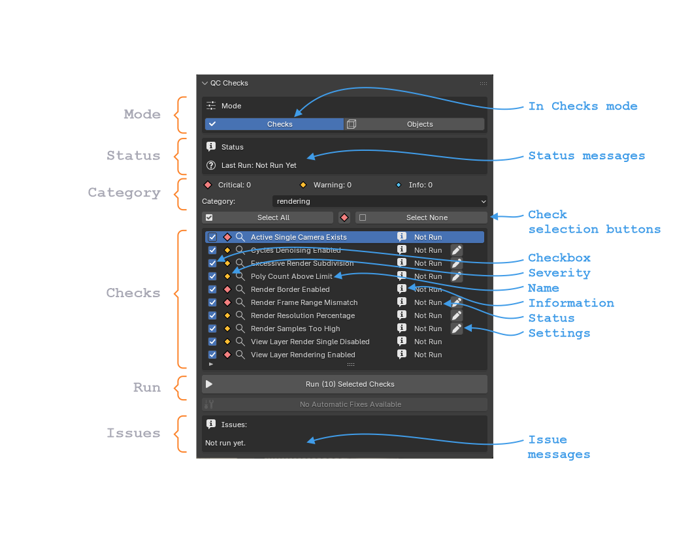

QC Checker Panel
Scriptronaut Blender panel.

Mode
There are 2 modes: Checks and Objects
Status
The status of the QC Checker.
Category
The current Category of the checks.
Each Category has a number of checks.
There are 7 Categories.
Checks
The current Checks for the selected category.
Run
Click the Run button to Run the currently selected checks.
Issues
After running a check the Isssues, if any, can be found here.